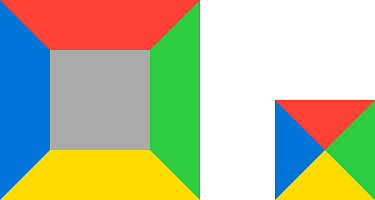

Рамки
Рамка
- border-width — ширина.
- border-style — вид.
- border-color — цвет.
- border — составное свойство (width style color).
- border-radius — радиус скругления углов.
Фоновое изображение для рамки:
- border-image-source — изображение.
- border-image-slice — нарезка изображения.
- border-image-width — ширина изображения.
- border-image-outset — отступ изображения.
- border-image-repeat — режим заполнения.
- border-image — составное свойство (source slice width outset repeat).
Свойство border-radius не влияет на фоновое изображение рамки, так что единственный способ сделать округлую рамку — использовать круглую картинку.
Установка рамки с отдельной стороны
Каждая из сторон border-рамки может иметь свои толщину, вид и цвет, или вовсе отсутствовать. Для такой настройки существуют следующие свойства:
- border-top — рамка сверху.
- border-right — рамка справа.
- border-bottom — рамка снизу.
- border-left — рамка слева.
Кроме того, внутренняя рамка не обязательно должна присутствовать со всех сторон и значением none можно отключить какую-либо её часть. Например:
border: 10px dashed #000;
border-left: none;Эти свойства являются составными, поэтому для настройки отдельного параметра каждой части рамки имеются соответствующие свойства:
Треугольники из рамок
У рамок есть одна особенность: если рамка элемента широкая, а сам элемент имеет нулевую ширину и высоту, то стороны рамки становятся треугольными.

Чтобы сделать треугольник нужно:
- Одной из сторон рамки задать нужный цвет.
- Противоположной стороне рамки задать нулевую толщину.
- Две другие стороны сделать прозрачными, задав прозрачный цвет (transparent).
Так с помощью обычного border можно создавать треугольные стрелки, направленные во все стороны.
Похожим способом можно создавать треугольные стрелки, направленные по диагонали.
- Одной из сторон рамки задать нужный цвет.
- Задать нулевую ширину противоположной стороне рамки и ещё одной.
- Последнюю сторону сделать прозрачной.
Стрелки выгодно делать с помощью рамок, потому что таким стрелкам можно легко менять пропорции, задавать разные цвета и размеры.
Внешняя рамка
Внешняя рамка всегда отображается снаружи элемента, не влияет на его размер и не занимает места.
Она подстраивается под форму элемента во всех браузерах кроме Safari, где отображается прямоугольной.
- outline-width — ширина.
- outline-style — вид.
- outline-color — цвет.
- outline — составное свойство (width style color).
- outline-offset — отступ.